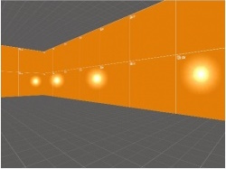

Source is a 3D game engine developed by Valve (Valve Corporation). The Source engine is well-known for its advancements in physics, AI, and graphics which made the games realistic for its time, while being scalable on older, less powerful hardware.
Source engine is originally a successor for the GoldSrc engine, which was a successor for the heavily modified version of John Carmack's Quake engine. Development of Source was going, replacing old features from it's successor, GoldSrc, in Valve's projects. So the last project developed by Valve using the Goldsrc engine was "Counter-Strike: Condition Zero"
Source engine was a breakthrough in gaming technology since it has brought new features that early were counted as unreachable. First game that was using new Source engine was "Half-life 2".
